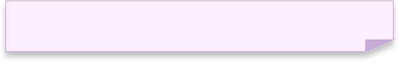
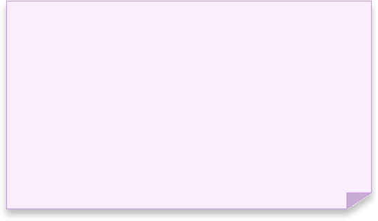
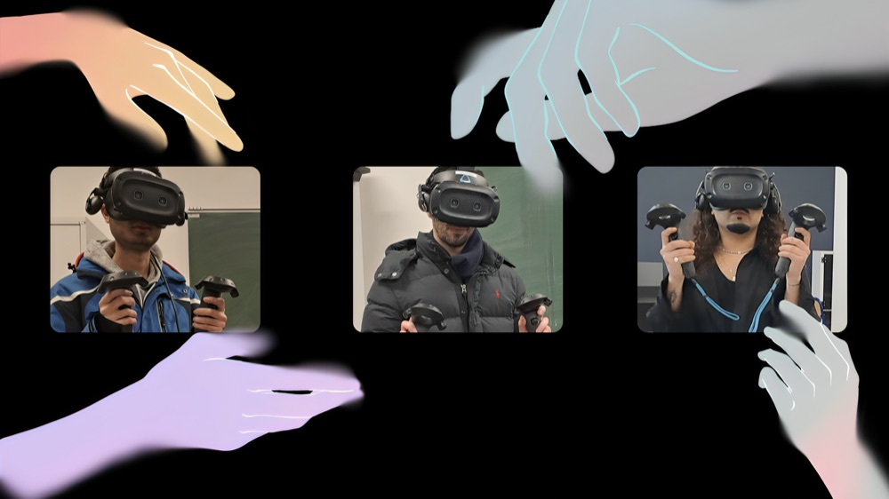
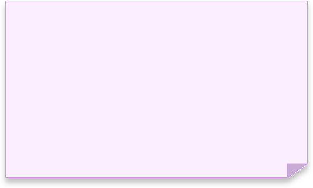
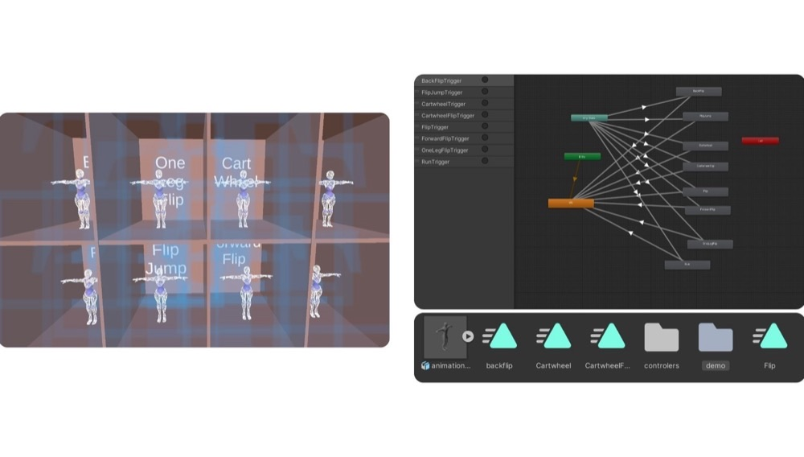

Anis Slimani
Inter-disciplinary Creative

In collaboration with Carl ABOU SADA NUJAIM and Andreas CHARALAMBIDES


ChoreoSphere is a virtual reality choreography tool for gymnastics, letting athletes design, visualize, and refine routines in a 3D interactive space.
With a VR timeline, gymnasts sequence jumps, adjust transitions, and get real-time scoring before physically rehearsing. This cuts trial-and-error, lowers injury risk, and gives more creative control over a routine. The system combines predefined gymnastics animations, music synchronization, and direct manipulation, making choreography more efficient and accessible.


ChoreoSphere is a virtual reality choreography tool for gymnastics, letting athletes design, visualize, and refine routines in a 3D interactive space.
With a VR timeline, gymnasts sequence jumps, adjust transitions, and get real-time scoring before physically rehearsing. This cuts trial-and-error, lowers injury risk, and gives more creative control over a routine. The system combines predefined gymnastics animations, music synchronization, and direct manipulation, making choreography more efficient and accessible.
In collaboration with Carl ABOU SADA NUJAIM and Andreas CHARALAMBIDES